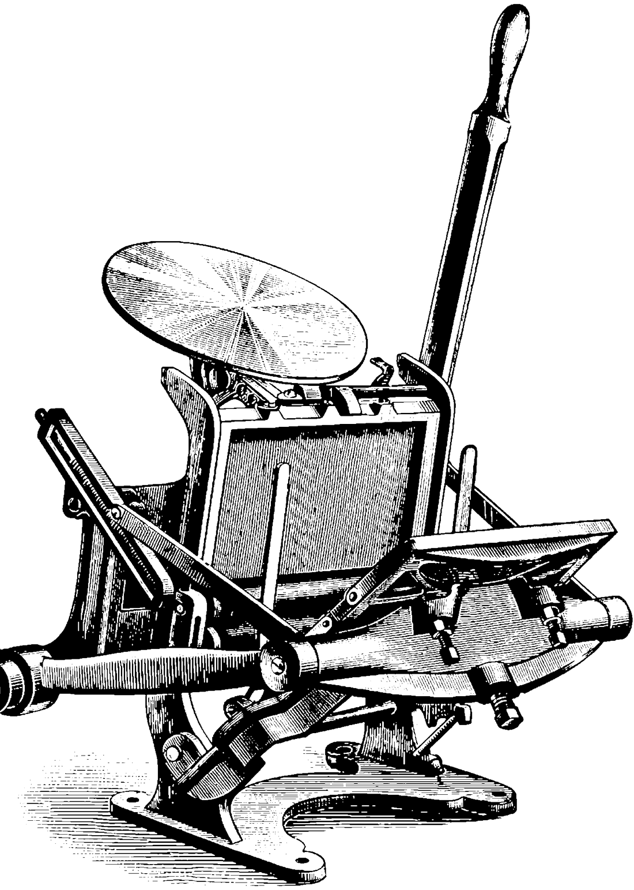
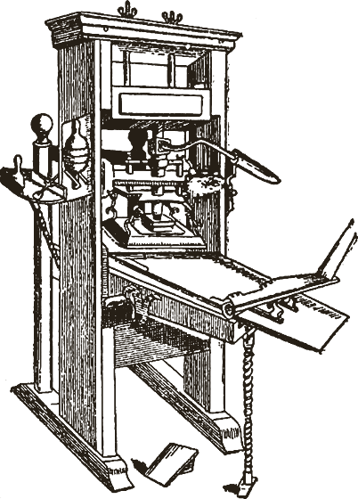
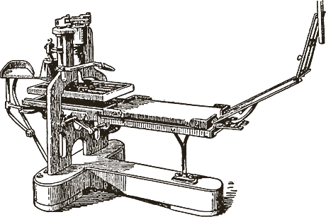
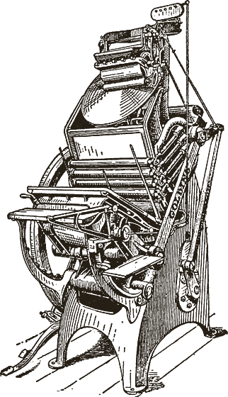

Chapter Two
History
Letterpress is one of the oldest forms of printing, where raised letters or images are inked and physically pressed onto paper.
Traditionally, individual pieces of metal or wooden type were arranged by hand to make a composition. Ink was applied to the raised surface, paper was carefully positioned, and pressure was applied with a press. Unlike modern digital printing — where an image is reproduced without physical contact — letterpress creates a print by pressing paper directly against an inked, raised surface.
The process is slow and highly hands-on, which makes every printed piece feel crafted and singular. It leaves a distinct tactile impression in the sheet: you can read it with a fingertip in the dark.
Ink, pressure,
paper, and patience.

For designs involving more than one colour, the sheet passes through the press several times — each colour needing its own carefully aligned impression. Once printing is finished, the sheets are left to dry before being trimmed, folded or bound.
What makes letterpress worth the trouble is that the process stays visible in the finished object. The slight variation in ink, the texture of the paper, the physical bite of the press — all of it becomes part of the artwork.
-
c. 1440

The wooden hand-press
Gutenberg casts movable type and the impression becomes repeatable. The press is timber, rope and a screw; a good day is a few hundred sheets, pulled by main force.
-
1800

Stanhope's iron frame
Stanhope casts the frame in iron. One pull now covers a whole forme instead of half, and the impression is even from the first sheet to the last.
-
1890s

The jobbing platen
The treadle platen arrives — small, quick, and built for cards and stationery rather than books. It is the machine the trade still reaches for.
-
Today
Ours, in Bombay
The same platen, the same hand-set type, the same deliberate pace. Kept running by a few pairs of hands — ours are in Bombay.
The act of printing becomes part of the design itself.